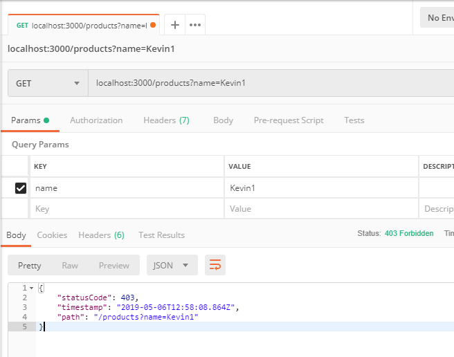

NestJS 有內建例外錯誤處理層，負責處理所以未處理的例外狀態，算是框架層級的錯誤處理機制，這裡 NestJS 使用一個名詞 exception filter，預設的處理型別為 HttpException
執行順序
Middleware 優先於 Exception Filter
例外狀態
如果例外狀態是沒有被處理的話，則會回傳預設訊息
1
2
3
4
| {
"statusCode": 500,
"message": "Internal server error"
}
|
既然我們知道可以手動處理例外狀態的回傳，在呼叫時就可以刻意的回傳正確的例外狀況，例如
1
2
3
4
| @Get()
async findAll() {
throw new HttpException('Forbidden', HttpStatus.FORBIDDEN);
}
|
既然 HttpException 是可以被繼承的，那我們也可以自行建立克制的例外狀態，根據官網的範例
1
2
3
4
5
6
| export class ForbiddenException extends HttpException {
constructor() {
super('Forbidden', HttpStatus.FORBIDDEN);
}
}
|
更多的例外狀態種類有以下
BadRequestExceptionUnauthorizedExceptionNotFoundExceptionForbiddenExceptionNotAcceptableExceptionRequestTimeoutExceptionConflictExceptionGoneExceptionPayloadTooLargeExceptionUnsupportedMediaTypeExceptionUnprocessableEntityExceptionInternalServerErrorExceptionNotImplementedExceptionBadGatewayExceptionServiceUnavailableExceptionGatewayTimeoutException
例外過濾
知道有各種例外狀態的種類，那就可以來寫過濾器，來攔截特定的例外狀況並回傳自訂的錯誤訊息。
1
2
3
4
5
6
7
8
9
10
11
12
13
14
15
16
17
18
19
20
21
22
23
24
25
26
27
| import {
ArgumentsHost,
Catch,
ExceptionFilter,
HttpException,
} from '@nestjs/common';
import { Response, Request } from 'express';
@Catch(HttpException)
export class HttpExceptionFilter implements ExceptionFilter {
catch(exception: HttpException, host: ArgumentsHost) {
const ctx = host.switchToHttp();
const response = ctx.getResponse<Response>();
const request = ctx.getRequest<Request>();
const status = exception.getStatus();
response.status(status).json({
statusCode: status,
timestamp: new Date().toISOString(),
path: request.url,
});
}
}
|
套用 Filter
想要套用 Exception Filter 時，可以透過 @UseFilters() 的方式來設定，可以設定在 method 或是 class 層級。如果想套用多個 Filter 時，直接使用 , 做分隔即可
1
2
3
4
5
6
7
8
9
| @Controller('products')
export class ProductsController {
@Get()
@UseFilters(HttpExceptionFilter)
getAll(@Res() response: Response, @Query() query) {
throw new HttpException('Forbidden', HttpStatus.FORBIDDEN);
}
}
|

要設定成為 Application 層級時，可以這樣子設定
1
2
3
4
5
6
| async function bootstrap() {
const app = await NestFactory.create(ApplicationModule);
app.useGlobalFilters(new HttpExceptionFilter());
await app.listen(3000);
}
bootstrap();
|
應用發想
如果可以攔截到例外狀態，也有一個地方可以集中處理，那就可以很簡單的將例外狀態儲存到某一個地方，並且可以依種類回傳不同的錯誤訊息。
參考資料